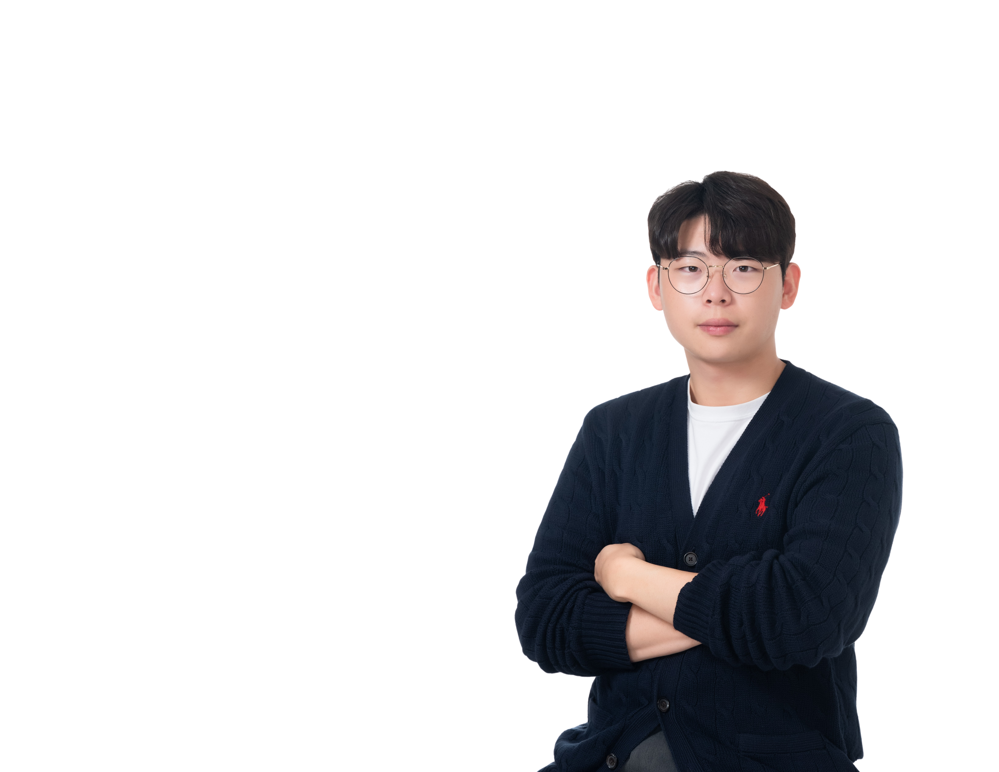
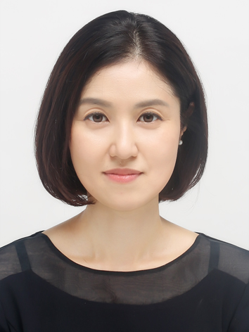

발표 소개
이화여대 캠퍼스타운 프로그램 [E-WAVE 아카데미 with 카카오엔터프라이즈]와 [E-WAVE 오픈 아카데미] 에서 배운 AI 기술을 실제 비즈니스와 일상에 적용한 우수 참여자들의 이야기를 만나봅니다.
AI 기반 채용 플랫폼부터 업무 자동화, 한국어 교육까지! 다양한 분야에서 AI를 활용해 새로운 가능성을 발견하고, 아이디어를 구체화한 경험과 도전 과정을 공유합니다.
- AI 활용 사례
- 일상과 비즈니스 적용
- 아이디어 구체화
공동연사 소개

송경민
(주)코디미 사업전략 CSO
코디미에서 사업전략과 영업을 담당하고 있는 CSO 입니다.

김동영
(주)라이프다이버전스_김동영
(주)라이프다이버전스 김동영 대표는 기존 낙후된 세차 시장을 디지털 전환하고, 데이터 기반 매장 운영 솔루션을 제공하고 있으며, 앞으로는 AI를 활용한 고객 관리를 통해 세차 시장을 더 효율적이게 혁신해나가고 있다.

황은혜
이화여자대학교 외국어특수대학원 한국어교육학과
황은혜는 외국인을 위한 한국어교육을 전공하며, AI 기술로 더 쉽고 즐거운 한국어 학습을 만드는 방법을 연구하고 있다. 외국인 학습자가 한국어를 통해 사람을 만나고, 한국을 경험하고, 자신의 꿈을 펼칠 수 있도록 돕는 AI 기반 한국어 학습 서비스를 기획. 개발하고 있다.